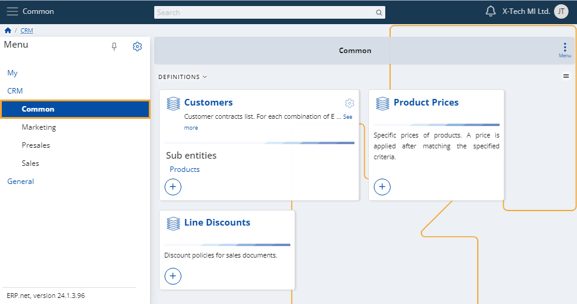
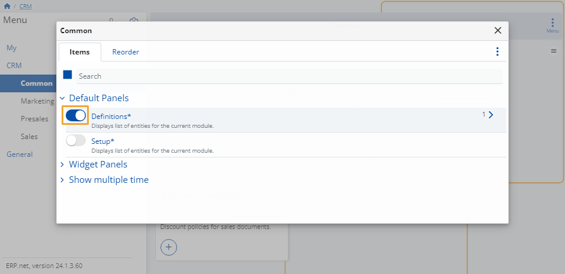

Common
This module allows you to preview your customers, product prices and discount policies for sales documents.
You can also define as many new ones of these as needed.

Add new
To create a new customer, product price or line discount, simply click on its + button.
This will open the respective creation form that you need to fill.
Once ready, click the Save and reload button to finish adding the new entity.
Customize form
You can decide which definitions appear on the page.
To do that, click the button at the top-right corner and select Customize form.

In the window that opens, you will see two tabs:
Items
Click the sliders on the left of an item to hide or reveal the respective panel from the page.

Reorder
You can change the order of the items' categories by dragging them up and down.
This would not be applicable if there's only one item category (e.g. Definitions).
Note
The screenshots taken for this article are from v24 of the platform.